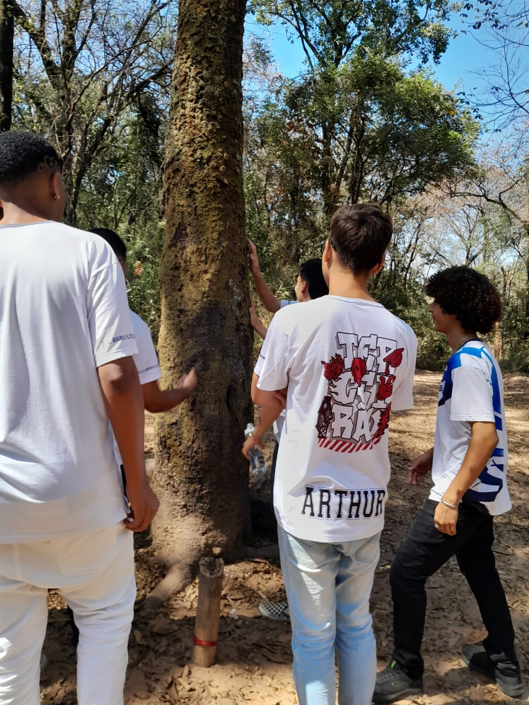

Apresentação dos grupos tecnicos
Publicado em: 13 de setembro de 2024
Os alunos do segundo ano tecnico irão apresentar seus trabalhos nesta sexta-feira, dia 13/09
Os alunos do segundo ano técnico irão apresentar seus trabalhos nesta sexta-feira, dia 13/09. Onde estarão apresentando o trabalho de "Desenvolvimento Web" do professor Leandro, em frente a toda a escola, no horário de 10:00 am. Também acontecerá outras apresentações, que são as:
culminância da turma de alimentos com o professor Josiano e culminância de arquitetura e manutenção (Italubosco)
Leia Mais
excursão Universidade Federal de Minas Gerais(UFMG)
Publicado em: 11 de setembro de 2024

Os alunos da escola foram para uma excursão na Universidade Federal de Minas Gerais (UFMG).
Os alunos da escola foram para uma excursão na Universidade Federal de Minas Gerais (UFMG). Perguntamos para um dos alunos presentes como foi sua experiência na excursão. Ele nos disse que foi uma experiência extremamente relaxante e única. Com aprendizados diferentes e uma atmosfera agradável. O mesmo também nos disse que tudo o que aprendeu foi extremamente interessante. Desde a ambientação do lugar até sobre os seres que o habitam.
Leia Mais